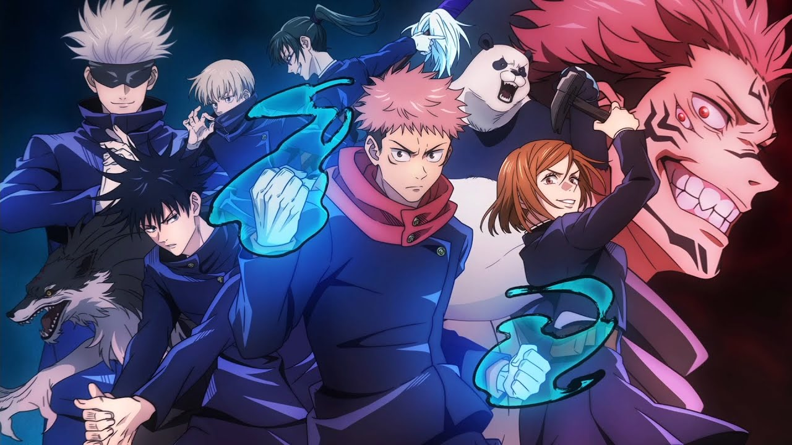

Jujutsu Kaisen
Jujutsu Kaisen is a dark fantasy anime and manga series by Gege Akutami. It follows Yuji Itadori as he joins a secret school of Jujutsu Sorcerers to battle curses and protect humanity. With intense action, emotional depth, and supernatural elements, it has become a fan favorite in the anime world.

Main Characters
- Yuji Itadori – A kind-hearted boy who becomes the host of Sukuna.
- Megumi Fushiguro – A sorcerer who uses shadow-based shikigami.
- Nobara Kugisaki – A fierce fighter with a unique curse technique using nails.
- Satoru Gojo – The strongest Jujutsu Sorcerer with unmatched power and charm.
- Maki Zenin – A weapon specialist with no cursed energy but exceptional skill and strength.
- Toge Inumaki – A quiet sorcerer who speaks in rice ball ingredients to wield cursed speech safely.
- Panda – A wise, sentient Cursed Corpse with different combat forms powered by unique cores.